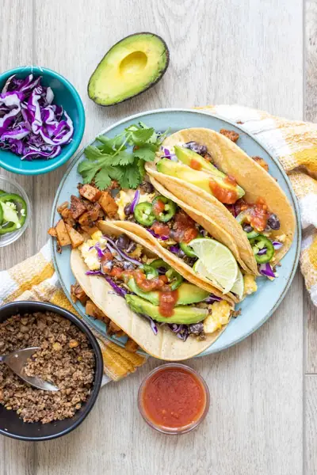

Vegan Breakfast Tacos (Easy, Healthy, High-Protein!)

Ingredients
- 1 cup crumbled tofu or vegan egg (see note - or use regular egg if you don’t need it vegan)
- 1 cup portobello bacon recipe (chopped into smaller pieces or use other bacon recipe you prefer)
- sea salt (to taste if needed)
- 1 cup black beans (homemade or store bought)
- 1 cup lentil walnut taco meat (or any other taco meat you prefer - see note)
- 8 taco sized tortillas (gluten-free if needed)
- shredded cabbage
- avocado
- red onion
- jalapeno
- spicy cilantro cream sauce
- salsa
- hot sauce
- shredded cheese or cheese sauce
Steps
- Cook the crumbled tofu or vegan egg over medium heat. When almost done, add the bacon and mix in. Put into a bowl and set aside.
- If you want the cabbage wilted a little, add to the pan and saute with broth or oil until just wilted. You can also use it cold, but this is a good option too.
- Warm the tortillas by wrapping them in a damp paper towel and heating in the microwave for 30-45 seconds. Keep heating in 15 second increments to get them soft and pliable.
- Fill with ingredients of choice, we used 2 tablespoons of the egg mixture, beans and taco meat per taco. Then topped with all the fixings.
- Enjoy!
Recipe by Anjali Shah, from The Picky Eater. Saved here for personal use; the original has the full notes, tips and photos. Open original